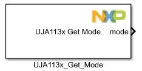
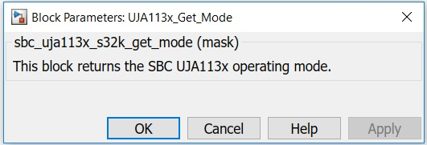

UJA113x Get Mode Block
This block returns the SBC operating mode.
Block Image
Inputs:
- None
Outputs:
- Mode.
Parameters and Dialog Box
The block has no parameters.
The output returned is a uint8 data type and has the following meaning:
Block Dependency
Please do the following:
- Configure the UJA113x Configuration block.
- Configure the LPSPI Configuration block.
Block Miscellaneous Details
- None
* To get more information refer to Hardware Manual documentation.